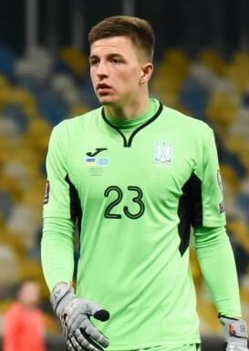

Ezzcoins › Player pages › Anatoliy Trubin
80
GK

Trubin
DIV77
HAN76
KIC77
REF84
SPD77
POS83
SL Benfica
Photo (cropped): Yuliia Perekopaiko · CC BY-SA 4.0 · Wikimedia Commons
Photo source
https://commons.wikimedia.org/wiki/File:%D0%9E%D1%82%D0%B1%D0%BE%D1%80_%D0%BA_%D0%A7%D0%9C-2022._%D0%A3%D0%BA%D1%80%D0%B0%D0%B8%D0%BD%D0%B0_-_%D0%9A%D0%B0%D0%B7%D0%B0%D1%85%D1%81%D1%82%D0%B0%D0%BD_1-1._31_%D0%BC%D0%B0%D1%80%D1%82%D0%B0_2021_%D0%B3%D0%BE%D0%B4%D0%B0_%E2%80%94_1212878_(cropped).jpg
Licence: https://creativecommons.org/licenses/by-sa/4.0
Anatoliy Trubin
80 GK · SL Benfica · Liga Portugal · Ukraine
No console price yet. Add this player to your watchlist on Ezzcoins: the most-watched players get a price every hour.
80Meta rating · GK same as overall
DIV77
HAN76
KIC77
REF84
SPD77
POS83
Chemistry style
Turn on JavaScript to see this card with each chemistry style.
- Position
- GK
- Club
- SL Benfica
- League
- Liga Portugal
- Nation
- Ukraine
- Skill moves
- 1★
- Weak foot
- 2★
- Preferred foot
- Right
Meta rating: Ezzcoins' own estimate of how well this card plays in game, worked out from its stats for each position it can play, its skill moves, weak foot and PlayStyle+. An average card scores about its overall rating; higher means it plays above its rating.
Watch on Ezzcoins